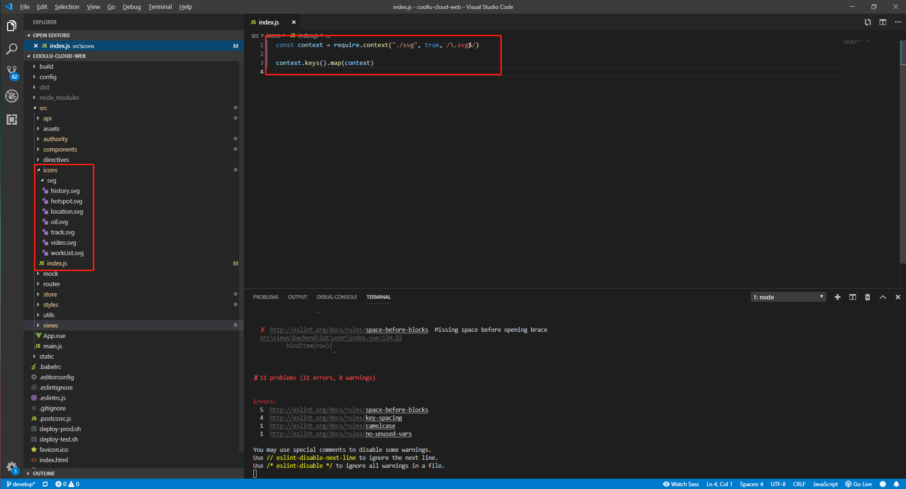
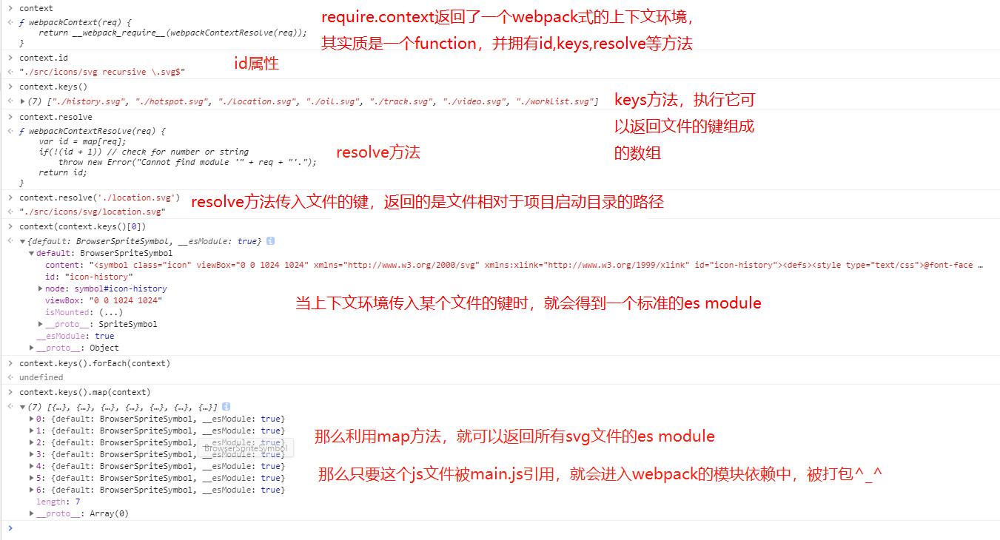

原文出处:本文由博客园博主Tusi博客提供。
原文连接:https://www.cnblogs.com/wenbinjiang/p/11165756.html
原文连接:https://www.cnblogs.com/wenbinjiang/p/11165756.html
很多人应该像我一样，对于webpack的require.context都是一知半解吧。网上很多关于require.context的使用案例，但是我没找到可以帮助我理解这个知识点的，于是也决定自己来探索一下，下面以网上流行的svg图标方案为例说明。对了，本文的重点是require.context，并不会去解释svg symbol方案svg-sprite-loader。
关键代码

src/icons/index.js
const context = require.context("./svg", true, /\.svg$/)
context.keys().map(context)main.js
import '@/icons'webpack.base.config.js
{
test: /\.svg$/,
loader: "svg-sprite-loader",
include: [resolve("src/icons")],
options: {
symbolId: "icon-[name]"
}
},
{
test: /\.(png|jpe?g|gif|svg)(\?.*)?$/,
loader: "url-loader",
exclude: [resolve("src/icons")],
options: {
limit: 10000,
name: utils.assetsPath("img/[name].[hash:7].[ext]")
}
},why?

很多人跟我一样，一开始只想说，为什么这样就可以，why???
要知道是什么，就上打印大法。
const context = require.context("./svg", true, /\.svg$/)
// 看看你是何方神圣
console.log(context)
context.keys().map(context)下面就真的以一张图进行解释，有问题的欢迎留言交流呀！

首发链接